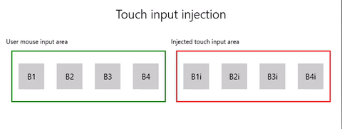

Simulate user input through input injection
Simulate and automate user input from devices such as keyboard, mouse, touch, pen, and gamepad in your Windows applications.
Important APIs: Windows.UI.Input.Preview.Injection
Overview
Input injection enables your Windows application to simulate input from a variety of input devices and direct that input anywhere, including outside your app's client area (even to apps running with Administrator privileges, such as the Registry Editor).
Input injection is useful for Windows apps and tools that need to provide functionality that includes accessibility, testing (ad-hoc, automated), and remote access and support features.
Setup
To use the input injection APIs in your Windows app you'll need to add the following to the app manifest:
- Right click the Package.appxmanifest file and select View code.
- Insert the following into the
Packagenode:xmlns:rescap="http://schemas.microsoft.com/appx/manifest/foundation/windows10/restrictedcapabilities"IgnorableNamespaces="rescap"
- Insert the following into the
Capabilitiesnode:<rescap:Capability Name="inputInjectionBrokered" />
Duplicate user input
 |
|---|
| Touch input injection sample |
In this example, we demonstrate how to use the input injection APIs (Windows.UI.Input.Preview.Injection) to listen for mouse input events in one region of an app, and simulate corresponding touch input events in another region.
Download this sample from Input injection sample (mouse to touch)
First, we set up the UI (MainPage.xaml).
We have two Grid areas (one for mouse input and one for injected touch input), each with four buttons.
Note
The Grid background must be assigned a value (
Transparent, in this case), otherwise pointer events are not detected.When any mouse clicks are detected in the input area, a corresponding touch event is injected into the input injection area. Button clicks from inject input are reported in the title area.
<Grid Background="{ThemeResource ApplicationPageBackgroundThemeBrush}"> <Grid.RowDefinitions> <RowDefinition Height="Auto"/> <RowDefinition Height="Auto"/> <RowDefinition Height="*"/> </Grid.RowDefinitions> <StackPanel Grid.Row="0" Margin="10"> <TextBlock Style="{ThemeResource TitleTextBlockStyle}" Name="titleText" Text="Touch input injection" HorizontalTextAlignment="Center" /> <TextBlock Style="{ThemeResource BodyTextBlockStyle}" Name="statusText" HorizontalTextAlignment="Center" /> </StackPanel> <Grid HorizontalAlignment="Center" Grid.Row="1"> <Grid.RowDefinitions> <RowDefinition Height="Auto"/> <RowDefinition Height="*"/> </Grid.RowDefinitions> <Grid.ColumnDefinitions> <ColumnDefinition/> <ColumnDefinition/> </Grid.ColumnDefinitions> <TextBlock Grid.Column="0" Grid.Row="0" Style="{ThemeResource CaptionTextBlockStyle}" Text="User mouse input area"/> <!-- Background must be set to something, otherwise pointer events are not detected. --> <Grid Name="ContainerInput" Grid.Column="0" Grid.Row="1" HorizontalAlignment="Stretch" Background="Transparent" BorderBrush="Green" BorderThickness="2" MinHeight="100" MinWidth="300" Margin="10"> <Grid.ColumnDefinitions> <ColumnDefinition/> <ColumnDefinition/> <ColumnDefinition/> <ColumnDefinition/> </Grid.ColumnDefinitions> <Button Name="B1" Grid.Column="0" HorizontalAlignment="Center" Width="50" Height="50" Content="B1" /> <Button Name="B2" Grid.Column="1" HorizontalAlignment="Center" Width="50" Height="50" Content="B2" /> <Button Name="B3" Grid.Column="2" HorizontalAlignment="Center" Width="50" Height="50" Content="B3" /> <Button Name="B4" Grid.Column="3" HorizontalAlignment="Center" Width="50" Height="50" Content="B4" /> </Grid> <TextBlock Grid.Column="1" Grid.Row="0" Style="{ThemeResource CaptionTextBlockStyle}" Text="Injected touch input area"/> <Grid Name="ContainerInject" Grid.Column="1" Grid.Row="1" HorizontalAlignment="Stretch" BorderBrush="Red" BorderThickness="2" MinHeight="100" MinWidth="300" Margin="10"> <Grid.ColumnDefinitions> <ColumnDefinition/> <ColumnDefinition/> <ColumnDefinition/> <ColumnDefinition/> </Grid.ColumnDefinitions> <Button Name="B1i" Click="Button_Click_Injected" Content="B1i" Grid.Column="0" HorizontalAlignment="Center" Width="50" Height="50" /> <Button Name="B2i" Click="Button_Click_Injected" Content="B2i" Grid.Column="1" HorizontalAlignment="Center" Width="50" Height="50" /> <Button Name="B3i" Click="Button_Click_Injected" Content="B3i" Grid.Column="2" HorizontalAlignment="Center" Width="50" Height="50" /> <Button Name="B4i" Click="Button_Click_Injected" Content="B4i" Grid.Column="3" HorizontalAlignment="Center" Width="50" Height="50" /> </Grid> </Grid> </Grid>Next, we initialize our app.
In this snippet, we declare our global objects and declare listeners for pointer events (AddHandler) within the mouse input area that might be marked as handled in the button click events.
The InputInjector object represents the virtual input device for sending the input data.
In the
ContainerInput_PointerPressedhandler we call the touch injection function.In the
ContainerInput_PointerReleasedhandler, we call UninitializeTouchInjection to shut down the InputInjector object.public sealed partial class MainPage : Page { /// <summary> /// The virtual input device. /// </summary> InputInjector _inputInjector; /// <summary> /// Initialize the app, set the window size, /// and add pointer input handlers for the container. /// </summary> public MainPage() { this.InitializeComponent(); ApplicationView.PreferredLaunchViewSize = new Size(600, 200); ApplicationView.PreferredLaunchWindowingMode = ApplicationViewWindowingMode.PreferredLaunchViewSize; // Button handles PointerPressed/PointerReleased in // the Tapped routed event, but we need the container Grid // to handle them also. Add a handler for both // PointerPressedEvent and PointerReleasedEvent on the input Grid // and set handledEventsToo to true. ContainerInput.AddHandler(PointerPressedEvent, new PointerEventHandler(ContainerInput_PointerPressed), true); ContainerInput.AddHandler(PointerReleasedEvent, new PointerEventHandler(ContainerInput_PointerReleased), true); } /// <summary> /// PointerReleased handler for all pointer conclusion events. /// PointerPressed and PointerReleased events do not always occur /// in pairs, so your app should listen for and handle any event that /// might conclude a pointer down (such as PointerExited, PointerCanceled, /// and PointerCaptureLost). /// </summary> /// <param name="sender">Source of the click event</param> /// <param name="e">Event args for the button click routed event</param> private void ContainerInput_PointerReleased( object sender, PointerRoutedEventArgs e) { // Prevent most handlers along the event route from handling event again. e.Handled = true; // Shut down the virtual input device. _inputInjector.UninitializeTouchInjection(); } /// <summary> /// PointerPressed handler. /// PointerPressed and PointerReleased events do not always occur /// in pairs. Your app should listen for and handle any event that /// might conclude a pointer down (such as PointerExited, /// PointerCanceled, and PointerCaptureLost). /// </summary> /// <param name="sender">Source of the click event</param> /// <param name="e">Event args for the button click routed event</param> private void ContainerInput_PointerPressed( object sender, PointerRoutedEventArgs e) { // Prevent most handlers along the event route from // handling the same event again. e.Handled = true; InjectTouchForMouse(e.GetCurrentPoint(ContainerInput)); } ... }Here's the touch input injection function.
First, we call TryCreate to instantiate the InputInjector object.
Then, we call InitializeTouchInjection with an InjectedInputVisualizationMode of
Default.After calculating the point of injection, we call InjectedInputTouchInfo to initialize the list of touch points to inject (for this example, we create one touch point corresponding to the mouse input pointer).
Finally, we call InjectTouchInput twice, the first for a pointer down and the second for a pointer up.
/// <summary> /// Inject touch input on injection target corresponding /// to mouse click on input target. /// </summary> /// <param name="pointerPoint">The mouse click pointer.</param> private void InjectTouchForMouse(PointerPoint pointerPoint) { // Create the touch injection object. _inputInjector = InputInjector.TryCreate(); if (_inputInjector != null) { _inputInjector.InitializeTouchInjection( InjectedInputVisualizationMode.Default); // Create a unique pointer ID for the injected touch pointer. // Multiple input pointers would require more robust handling. uint pointerId = pointerPoint.PointerId + 1; // Get the bounding rectangle of the app window. Rect appBounds = Windows.UI.ViewManagement.ApplicationView.GetForCurrentView().VisibleBounds; // Get the top left screen coordinates of the app window rect. Point appBoundsTopLeft = new Point(appBounds.Left, appBounds.Top); // Get a reference to the input injection area. GeneralTransform injectArea = ContainerInject.TransformToVisual(Window.Current.Content); // Get the top left screen coordinates of the input injection area. Point injectAreaTopLeft = injectArea.TransformPoint(new Point(0, 0)); // Get the screen coordinates (relative to the input area) // of the input pointer. int pointerPointX = (int)pointerPoint.Position.X; int pointerPointY = (int)pointerPoint.Position.Y; // Create the point for input injection and calculate its screen location. Point injectionPoint = new Point( appBoundsTopLeft.X + injectAreaTopLeft.X + pointerPointX, appBoundsTopLeft.Y + injectAreaTopLeft.Y + pointerPointY); // Create a touch data point for pointer down. // Each element in the touch data list represents a single touch contact. // For this example, we're mirroring a single mouse pointer. List<InjectedInputTouchInfo> touchData = new List<InjectedInputTouchInfo> { new InjectedInputTouchInfo { Contact = new InjectedInputRectangle { Left = 30, Top = 30, Bottom = 30, Right = 30 }, PointerInfo = new InjectedInputPointerInfo { PointerId = pointerId, PointerOptions = InjectedInputPointerOptions.PointerDown | InjectedInputPointerOptions.InContact | InjectedInputPointerOptions.New, TimeOffsetInMilliseconds = 0, PixelLocation = new InjectedInputPoint { PositionX = (int)injectionPoint.X , PositionY = (int)injectionPoint.Y } }, Pressure = 1.0, TouchParameters = InjectedInputTouchParameters.Pressure | InjectedInputTouchParameters.Contact } }; // Inject the touch input. _inputInjector.InjectTouchInput(touchData); // Create a touch data point for pointer up. touchData = new List<InjectedInputTouchInfo> { new InjectedInputTouchInfo { PointerInfo = new InjectedInputPointerInfo { PointerId = pointerId, PointerOptions = InjectedInputPointerOptions.PointerUp } } }; // Inject the touch input. _inputInjector.InjectTouchInput(touchData); } }Finally, we handle any Button Click routed events in the input injection area and update the UI with the name of the button clicked.